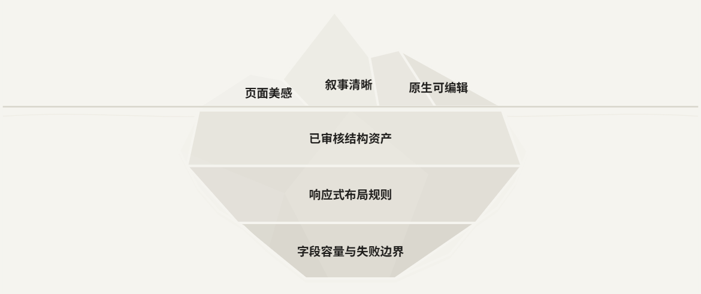
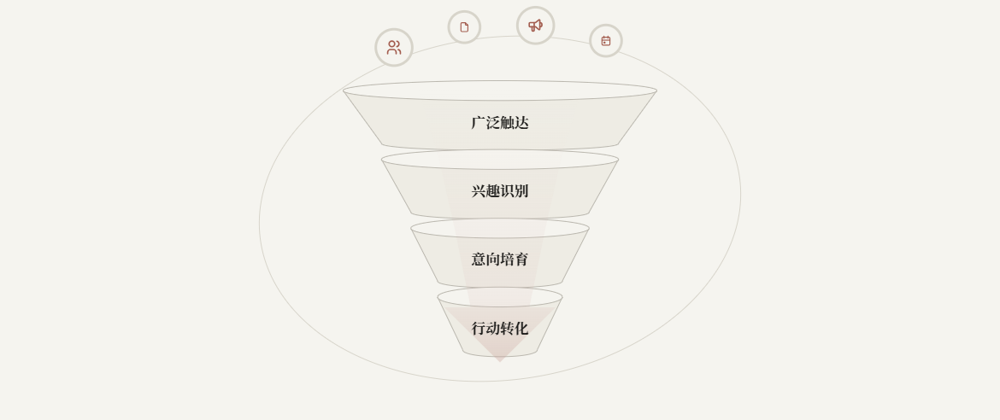
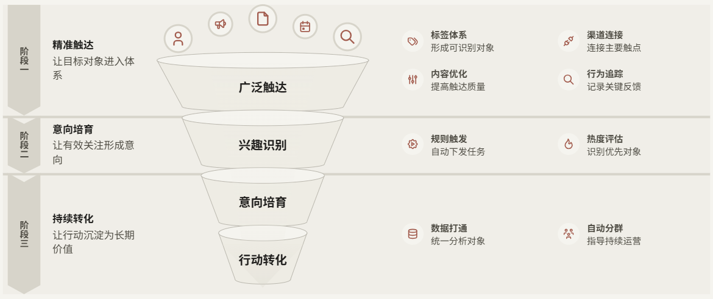
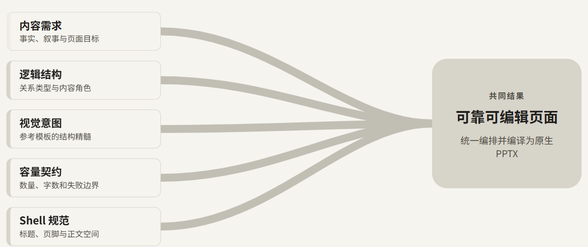
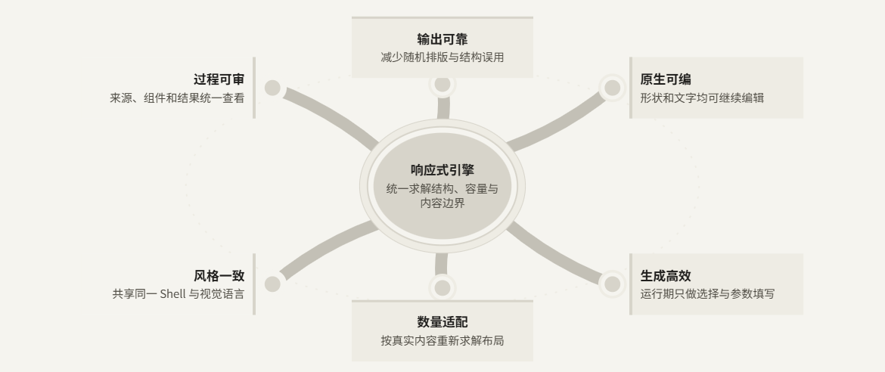
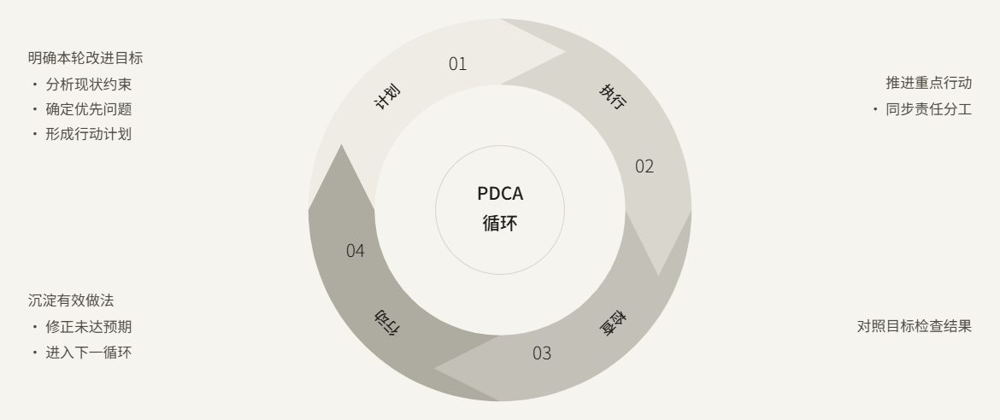

中性结构 · 对应形状共用派生颜色
漏斗主体、顶面、轮廓一致；冰山保留分面；关系线使用中等色阶；循环箭头与环段无分隔描边。
layered-iceberg-depth-006

convergence-simple-funnel-001

convergence-funnel-001

convergence-many-to-one-003

hub-directed-outcomes-002

cycle-loop-001
